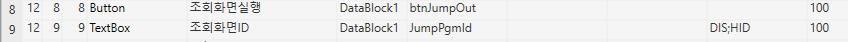
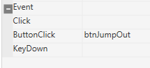
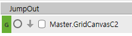
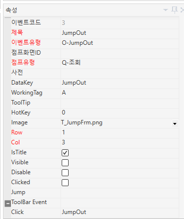

시트 버튼 눌러서 점프 (옆에 조회화면 ID로)
FrmWACMRProc_emk
Monthly Report 집계처리_emk

Button 조회화면실행 DataBlock1 btnJumpOut 100
TextBox 조회화면ID DataBlock1 JumpPgmId DIS;HID 100

-- btnJumpOut (E-처리)
local pgmid, isJumpProc
pgmid= CellText(SS1, SS1.ActiveRow,'JumpPgmId')
if pgmid == '' then
GoTo('END')
else
JumpOutPgm('JumpOut',pgmid)
end


툴바 속성